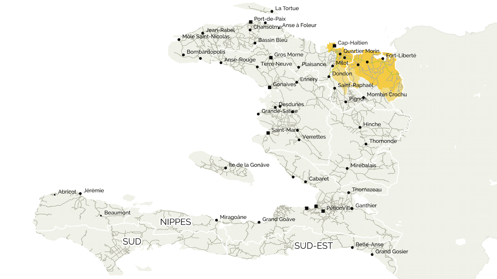

- 
Something nice about the above map...
Subtext, more nice things, blah blah blah...

Test text blah

Number two blah

Number three

Number four

Numbah fivee
Something nice about the above map...
Subtext, more nice things, blah blah blah...